Projet GSB
Conception, déploiement matériel et sécurisation d'une infrastructure d'entreprise complète.
1 – INTRODUCTION
Cette réalisation a été effectuée durant mon cursus en BTS SIO. Nous avons eu pour mission de concevoir, installer et configurer une infrastructure complète pour le compte d'une entreprise cliente fictive : GSB (Galaxy Swiss-Bourdin), issue de la fusion de deux laboratoires pharmaceutiques.
Durant ce projet, nous avons été chargés de réaliser l'installation physique (hardware) et logicielle du réseau. L'objectif n'était pas uniquement d'aligner des configurations, mais de raisonner en tant que techniciens supérieurs pour bâtir une infrastructure cohérente, homogène et hautement disponible.
2 – OBJECTIFS ET ENJEUX
Ce contexte avait pour objectif de nous faire travailler dans une véritable situation professionnelle. Les enjeux majeurs s'articulaient autour de deux axes :
- La maîtrise technique : Comprendre le fonctionnement d'un SI de sa conception à sa sécurisation, en proposant des solutions adaptées aux contraintes matérielles.
- Les objectifs relationnels : Interagir au sein d'un groupe, prendre des décisions collectives et répartir les tâches intelligemment pour tenir les délais.
3 – CONTEXTE HUMAIN ET MATÉRIEL
Pour réaliser ce projet, nous étions une équipe de quatre étudiants, divisée en deux binômes. Nous avons travaillé sur une infrastructure "on-premise" (sur site) totalement dédiée à notre groupe.
Notre équipement de base comprenait des serveurs physiques, des baies de brassage et des commutateurs (switchs). Une des exigences fortes du client GSB était le respect absolu d'un plan d'adressage IP massif, capable de supporter la croissance de l'entreprise pharmaceutique.
4 – ÉTAPES DU PROJET
4.1 – Upgrade Matériel et Routage (Switch)
Avant même de toucher à la configuration logicielle, nous avons effectué une intervention matérielle. Nous avons ouvert nos deux serveurs physiques pour remplacer les anciens disques durs par des SSD neufs, garantissant ainsi des performances d'E/S (Entrées/Sorties) optimales pour nos futures machines virtuelles.
Ensuite, nous avons racké les serveurs dans la baie de brassage et raccordé physiquement les interfaces réseaux au switch central. À l'aide d'un PC d'administration et du logiciel PuTTY, nous avons configuré le commutateur en ligne de commande. Nous avons segmenté le réseau via des VLANs : le VLAN 300 pour la production et le VLAN 150, totalement isolé, pour les visiteurs. Des ACLs (Access Control Lists) ont été appliquées pour empêcher toute communication entre ces deux zones.
4.2 – Hypervision (XCP-ng & XOA)
Sur notre matériel fraîchement mis à niveau, nous avons installé l'hyperviseur "Bare Metal" XCP-ng 8.3. Ce socle nous a permis de diviser la puissance de nos serveurs pour héberger notre infrastructure virtuelle.
Pour piloter cet environnement de manière centralisée, nous avons déployé Xen Orchestra (XOA). Cette interface web nous a offert une gestion fluide des ressources (RAM, CPU, Stockage) et nous a permis de sécuriser notre travail grâce à des Snapshots réguliers.
4.3 – Identité et Haute Disponibilité (poled.local)
Le cœur du système d'information repose sur le domaine poled.local. Nous avons déployé deux machines virtuelles sous Windows Server 2022 (une par binôme) que nous avons promues en tant que Contrôleurs de Domaine (Active Directory).
Pour répondre au cahier des charges GSB, ces serveurs ont été placés dans le VLAN 300 avec des IP statiques (172.16.0.30 et .32) et un masque très large en /17 (255.255.128.0), routé par la passerelle 172.16.0.1. L'enjeu de la Haute Disponibilité a été validé en configurant une réplication bidirectionnelle parfaite entre nos deux serveurs (vérifiée via la commande repadmin avec 0 échec). L'ajout des rôles DNS et DHCP a rendu l'infrastructure totalement autonome.
4.4 – Validation : Le Poste Client
La preuve de fonctionnement de toute cette architecture a été le déploiement d'une VM sous Windows 11. Connectée au switch virtuel, elle a automatiquement reçu une configuration IP de notre DHCP, a pu interroger le DNS, et a rejoint avec succès le domaine de l'entreprise, validant ainsi toute la chaîne de liaison.
5 – CE QUE JE RETIENS
Ce projet m'a apporté plus que n'importe quel simple exercice scolaire. J'ai pu exercer concrètement le métier d'administrateur système et réseau, de la manipulation physique des composants jusqu'au paramétrage complexe d'annuaires redondants. Bien que nous ayons rencontré des défis techniques (erreurs de routage, configurations de réplication), la fierté de voir une infrastructure de "Haute Disponibilité" fonctionner parfaitement entre nos deux binômes a été extrêmement formatrice. Cela a radicalement changé ma manière de raisonner face au troubleshooting (résolution de problèmes).
6 – GALERIE DE PRODUCTION
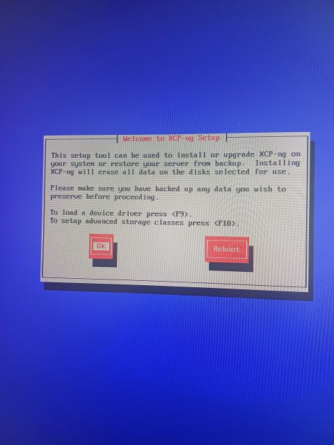
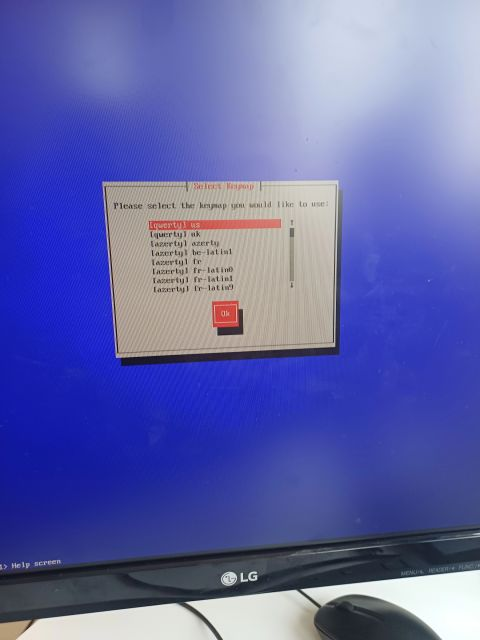
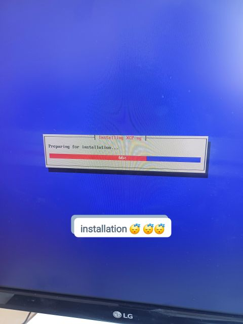
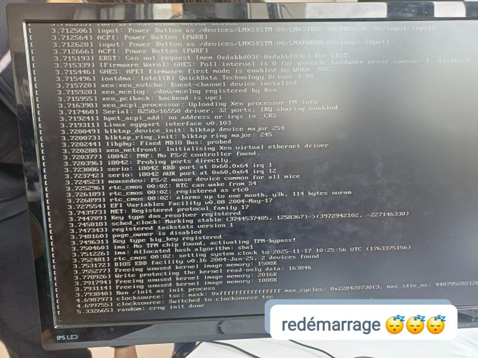
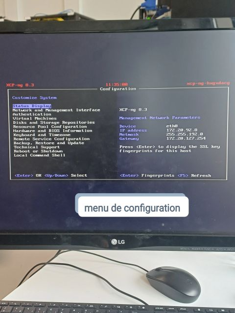
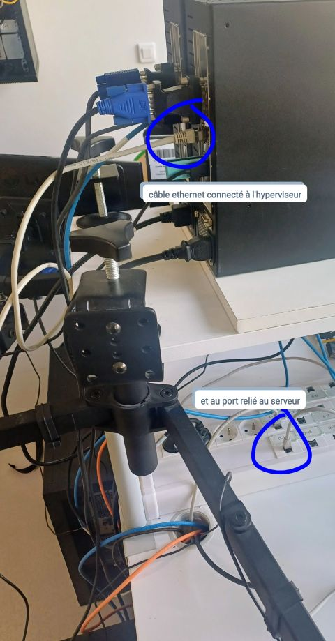
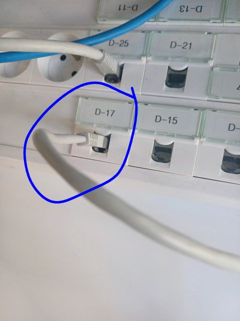
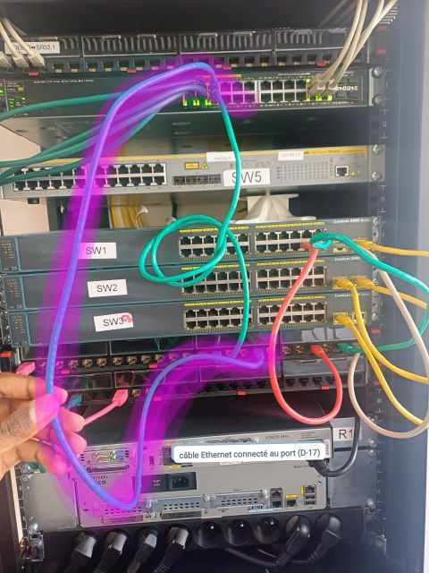
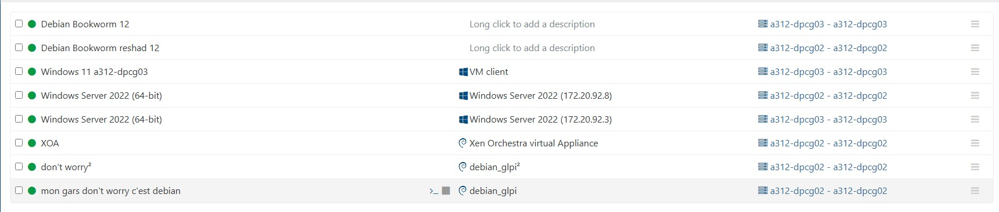
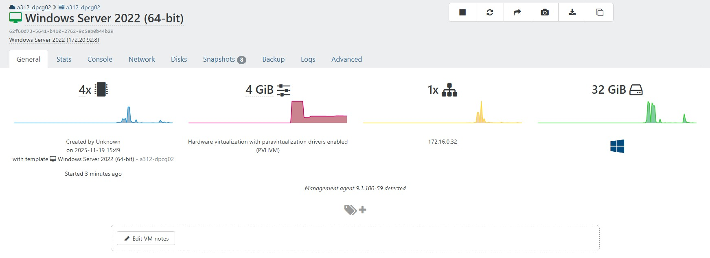

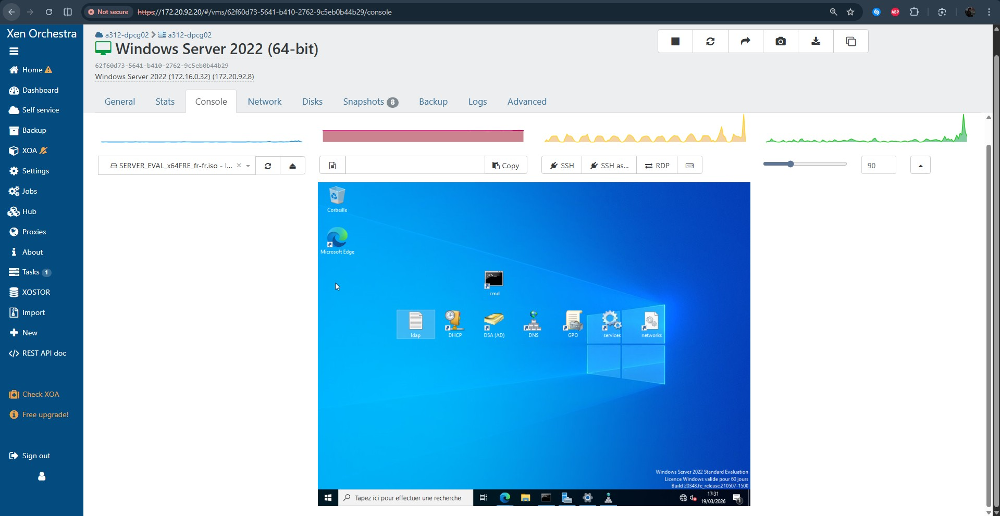
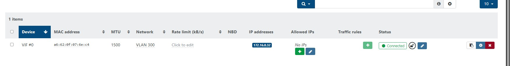
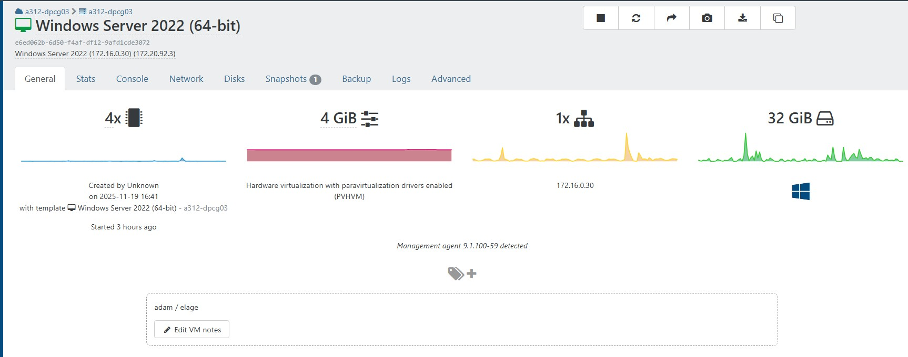
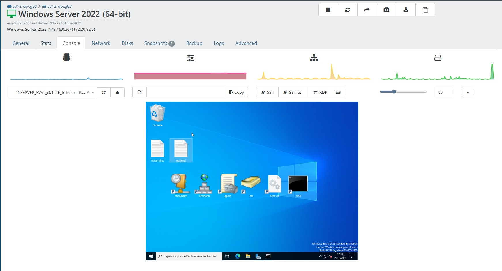
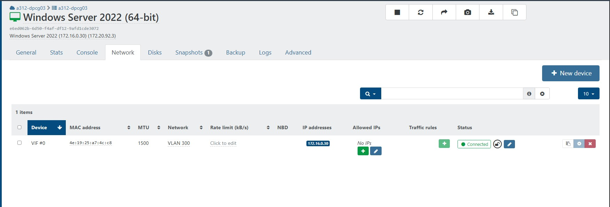
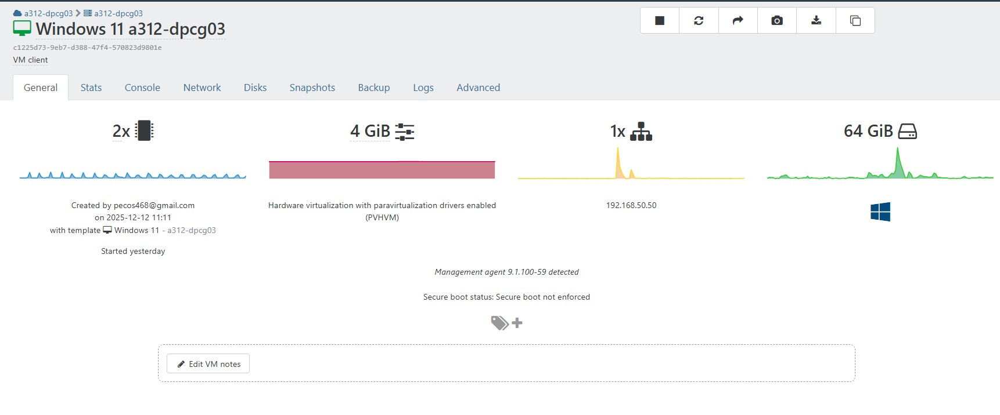
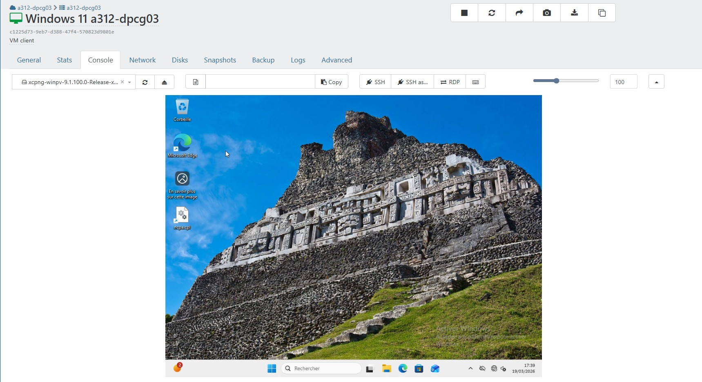
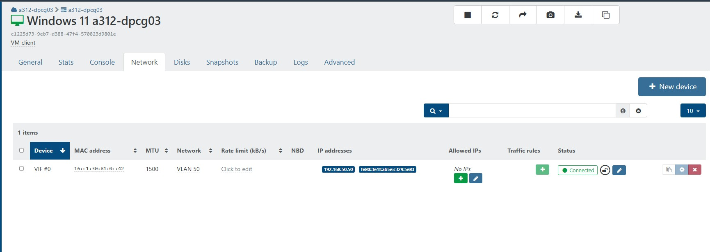
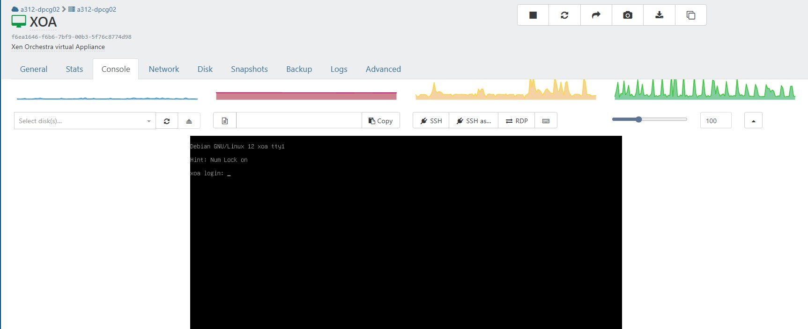
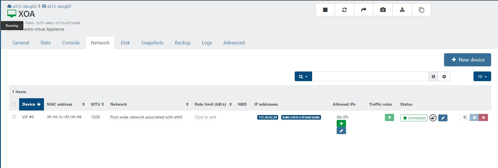
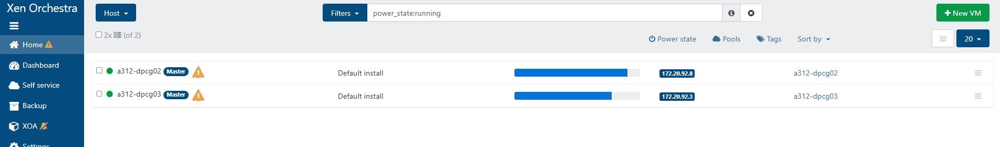
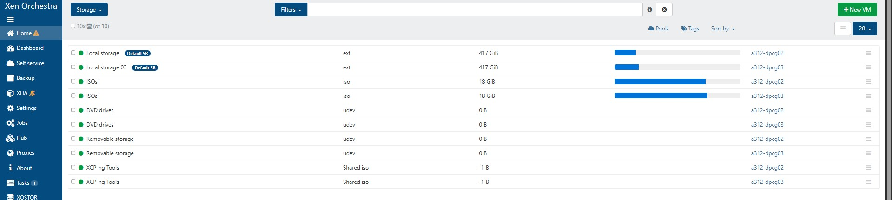
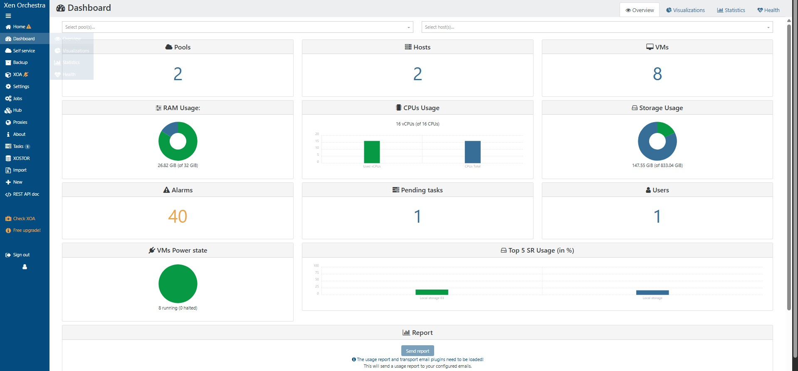
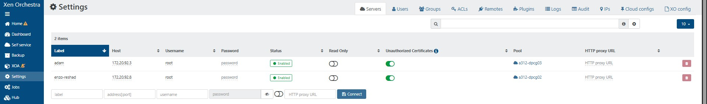
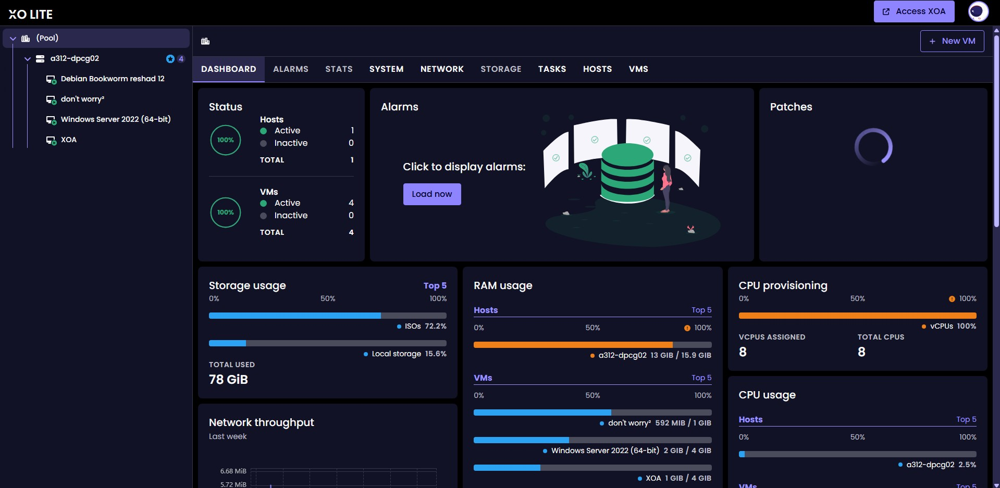
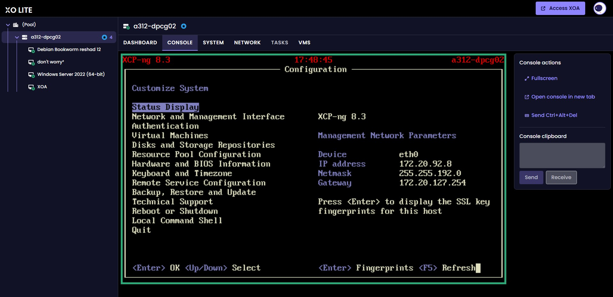
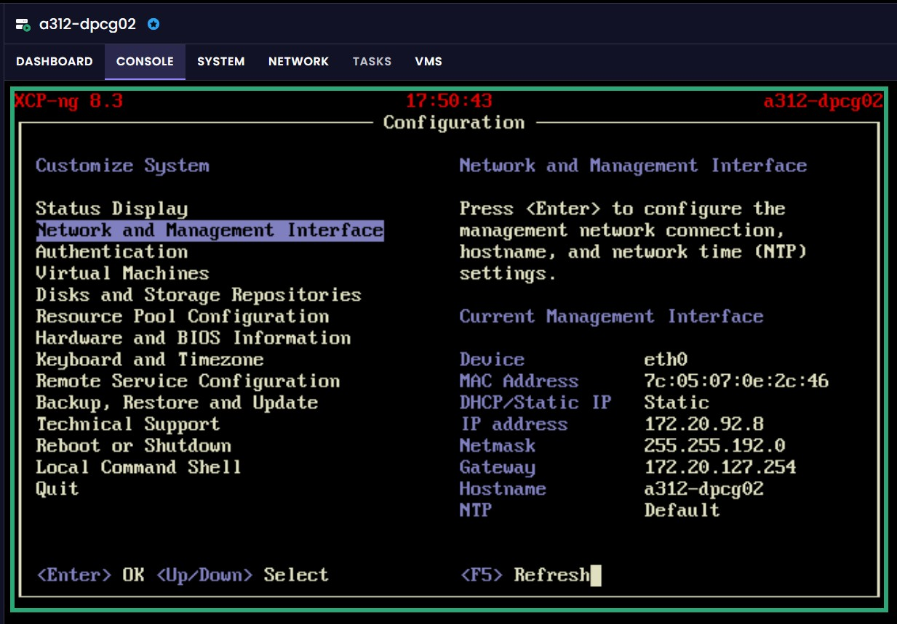
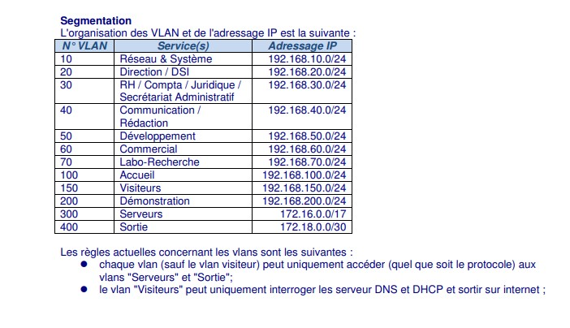